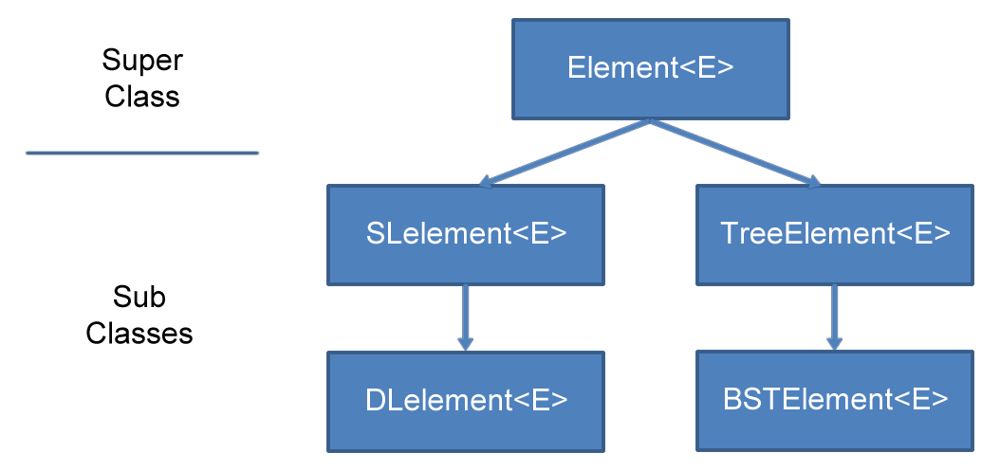
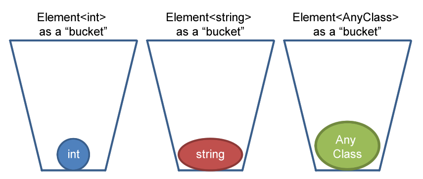

What is Bridges?
Bridges is a set of libraries that allow the user to build data structures using the building blocks from the Bridges Elements class. Bridges currently supports the following types of Elements:
- Element - the basic element that just holds data
- Single Linked Elements - elements that point to one other element
- Double Linked Elements - elements that point to two other elements
- Binary Tree Elements - elements that only point to a left and right child element
- Binary Search Tree Elements - a binary tree element with a "key", to be used in binary search implementations
- Adjacency List Graphs - containers that hold element connections with linked lists
- Adjcacency Matrix Graphs - containers that hold element concections with a matrix
What is an Element<E>?
Element<E> is the superclass of SLelement<E> and TreeElement<E>.

You will normally be using these classes to build data structures. Since they are subclasses of Element<E>,
they inherit a common set of methods and instance variables, so to a certain extent they will share a common
set of behavior. However, since they are all different classes, they will have methods and instance variables
that are unique to their particular class.
What is the <E>?
<E> is a generic parameter. It represents any class, so you can
have an SLelement<string> or an SLelement<int> or any other class.
You may be wondering, if <E> can be any class, then how does Element
know how to behave since a boolean does not have the same methods available
as a string?
Since we didn't put any restrictions on <E> inside the Element definition,
we can only call methods of <E> that are common to ALL classes. We will
not be allowed to call a method on E that is particular to any one class.
In this way, we can allow the Element<E> class to function as a container.
The container doesn't care what it's holding and whatever the container is holding
doesn't influence the behavior of the container.

What about Graphs?
Bridges also contains the GraphAdjacencyList and GraphAdjacencyMatrix classes,
however, these do not subclass from Element.
This is because Graphs themselves are containers holding Bridges classes. Internally Bridges graphs will
hold subclasses of Element. When you interact with the graphs you will typically be
adding an Element to them or retrieving an Element from them.